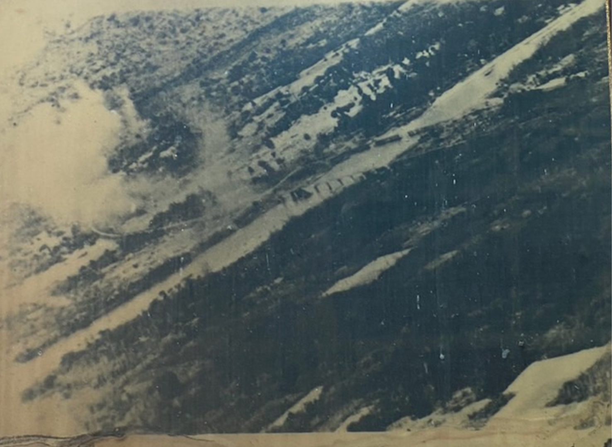
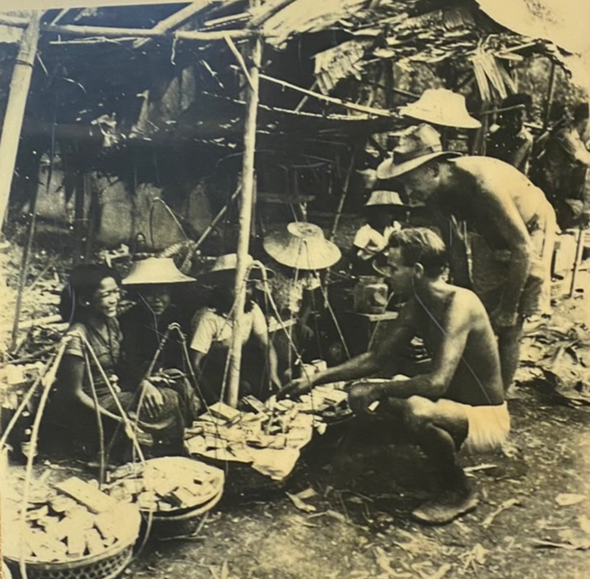

แม้สงครามโลกครั้งที่ 2
จะสร้างประวัติศาสตร์บาดแผลอันยิ่งใหญ่ทั้งในร่างกายและจิตใจของมนุษยชาติบนโลกใบนี้
อย่างไม่สามารถหาสิ่งใดมาเยียวยาได้
กระนั้นก็ตามเรียนรู้บทเรียนจากสงครามโลกครั้งที่ 2 เป็นสิ่งที่มนุษยชนพึงตระหนักในทุกยุคสมัย
หนังสือสงครามโลกครั้งที่ 2 ทำไมไทยจึงไม่แพ้ได้สะท้อนถึงบทเรียนสำคัญกับคนไทยไว้ว่า
เมื่อสงครามเสร็จสิ้นลงปรากฏว่า อังกฤษจะไม่ยอมเลิกสถานะสงครามกับไทย
และต้องการถือว่าไทยเป็นผู้แพ้สงคราม คณะเจรจาจากฝ่ายไทยได้มีโอกาสปรารภให้เจ้าหน้าที่สหรัฐฯ
ได้รับฟังและขอให้ช่วยสนับสนุนการขอให้อังกฤษยอมรับการประกาศวันสันติภาพไทย
และ ยกเลิกความตั้งใจที่จะถือว่าประเทศไทยเป็นผู้แพ้สงคราม ในสงครามโลกครั้งที่ 2 นี้เนื่องจากทางสหรัฐฯ
ได้ทุ่มทุนทั้งกำลังเงินและกำลังทหารตลอดจนอาวุธยุทธภัณฑ์ต่างๆ มากกว่าประเทศใดๆ
และมีส่วนอย่างมากที่ทำให้ฝ่าย สัมพันธมิตรชนะสงครามโลกครั้งที่ 2 ประเทศอื่นๆ จึงมีความเกรงใจ
ดังนั้นเมื่อสหรัฐฯ
ได้เจรจากับฝ่ายอังกฤษประเทศอังกฤษจึงยอมรับประกาศสันติภาพของไทย แต่มีเงื่อนไขว่า
ก่อนที่ทางอังกฤษจะยอมรับกับการประกาศสันติภาพของไทย
ประเทศไทยต้องชดเชยค่าเสียหายให้กับอังกฤษโดยส่งข้าว 1.5 ล้านตัน และ
ต้องชดเชยเงินค่าซ่อมแซมทางรถไฟสายพม่าที่เสียหาย รวมค่าเสียหายที่ไทยต้องจ่ายให้อังกฤษเป็นเงินประมาณ
91 ล้านบาทจะเป็นที่น่ายินดีอย่างยิ่ง
หากคนไทยรุ่นหลังได้ทราบถึงวีรกรรมของผู้หลักผู้ใหญ่ที่ทำให้ประเทศไทยไม่ตกเป็นประเทศผู้แพ้สงคราม
และไม่ต้องถูกแบ่งแยกประเทศเหมือนประเทศเกาหลีและประเทศเยอรมัน
หรือถูกครอบครองโดยประเทศที่ชนะสงครามเหมือนประเทศญี่ปุ่น ขบวนการเสรีไทยไม่ได้มีเพียงวีรบุรุษเท่านั้น
แต่ยังมีวีรสตรีไทยที่ทำหน้าที่อย่างดีเลิศ แต่ครั้งโบราณมาผู้หญิงไทย "เปลก็ไกวดาบก็แกว่ง"
ปกป้องลูกหลานแผ่นดินไทยไว้มาก
สตรีไทยในยุคสงครามโลกครั้งที่ 2 ก็ไม่ได้น้อยหน้า
ได้ปฏิบัติหน้าที่เป็นเสรีไทยจนได้รับคำยกย่องจากรัฐบาลต่างๆ
หลายประเทศในเวลาต่อมาที่ประเทศไทยรอดพ้นปากเหยี่ยวปากกามาได้ไม่ถูกตราหน้าว่าเป็นประเทศที่แพ้ในสงครามโลกครั้งที่
2
ก็เพราะวีรกรรมของเสรีไทยที่ได้เสียสละชีวิตและความสุขส่วนตนเพื่อให้ประเทศยังคงรักษาเอกราชไว้เป็นแผ่นดินไทย
ให้อนุชนคนรุ่นหลังได้อยู่อย่างสบายจน
ทุกวันนี้ความเสียสละโดยไม่เคยขออะไรตอบแทนไม่ว่าจะเป็นตำแหน่งทางราชการหรือผลประโยชน์ในทาง
ธุรกิจของวีรชนเหล่านี้ไม่ได้เป็นเพียงความภาคภูมิใจของทายาทของท่านเท่านั้น
แต่ยังเป็นแบบอย่างที่ดีที่คนไทยรุ่นหลังพึงระลึกถึง จดจำ และ ดำเนินรอยตาม
หากทุกคนมีความรักในมาตุภูมิและคำนึงถึงส่วนรวมและประเทศชาติเป็นที่ตั้งแล้ว
ความขัดแย้งทั้งหลายอย่างที่เราพบเห็นในบ้านเมืองทุกวันนี้คงหมดไป
ประเทศไทยของเราจะสามารถฝ่าฟันภัยวิกฤตนานาไปได้
เป็นประเทศที่ร่มเย็นน่าอยู่สำหรับคนรุ่นลูกรุ่นหลานสืบไปกระนั้นก็ตามบทเรียน
และ ความทรงจำที่สะท้อนให้เห็นถึงความตระหนักของมนุษย์ผู้ใฝ่ดำรงซึ่งสันติภาพใน
จิตใจทุกคนไม่ต้องการให้ประวัติศาสตร์บาดแผลนี้เกิดขึ้นอีก ก็ได้รับการจารึกไว้ในพิพิธภัณฑ์แห่งนี้
ผ่านสิ่งของภาพถ่าย
และข้อความ
Forgive but Forgot.... ให้อภัยแต่ไม่เคยลืม…

